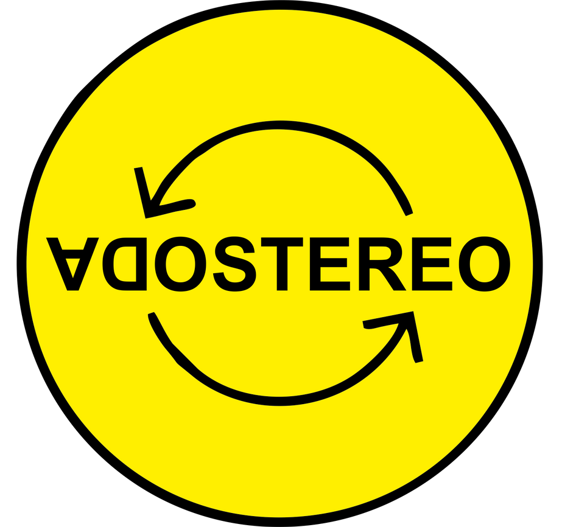

Welcome to Victor Daniel Naranjo Martinez Website!
Hello! My name is Victor Daniel. I am from Colombia and I love music and technology. I am currently studying Computer programming at Sault College in Sault Ste Marie, Ontario, Canada. I play the guitar and some others music insturments and I have produce music (rock, electronic and urban things). I will create y owm website with my music 😎✌
I am very happy to share my favorite things and all the stuff that I like to do. I love to travel, too. Canada becomes my number 10 country in the list of conutries that I have vised. The others are Peru, Ecuador, Paraguay, Brasil, Panama, Argentina, Chile, Uruguay and, of course, Colombia. I hope this list will be 20 in two years!
My favorite music bands
- Soda Stereo
- Pink Floyd
- Muse
Haiku
between songs . . .
pick marks
on an old guitar
by